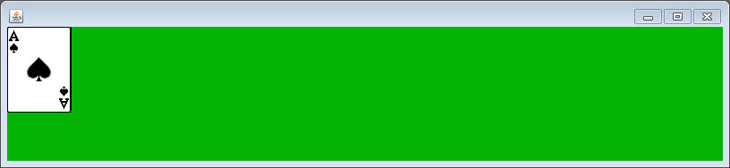
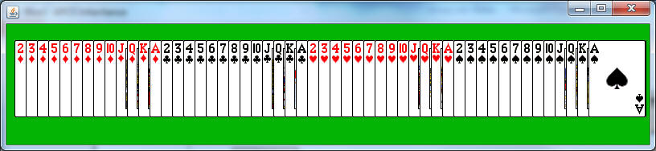
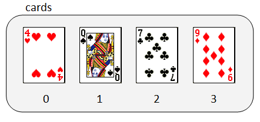
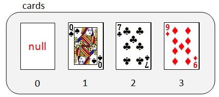
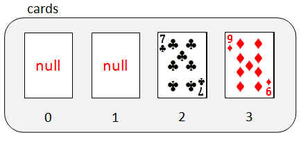

Cards and ArrayLists
For this assignment, we are going to use the FlipCard class that you created in the last unit. Copy it class into your current project (along with the SCard class that it extends). Though you have already made a CardBoard class, for the purposes of this assignment I am going to provide you with a version that does the same thing. Read through and make sure that you understand my approach.
import sacco.*;
public class CardBoard extends SaccoObject
{
private FlipCard[] cards;
public CardBoard()
{
loadCards();
arrangeCards();
}
public void loadCards()
{
cards = new FlipCard[52];
String[] valChar = {"2","3","4","5","6","7","8","9","T","J","Q","K","A"};
String[] suitChar = {"D","C","H","S"};
int index = 0;
for( int s = 0; s < suitChar.length; s++)
{
for(int v = 0; v < valChar.length; v++)
{
FlipCard c = new FlipCard(valChar[v],suitChar[s]);
cards[index] = c;
index++;
}
}
}
public void arrangeCards()
{
}
public FlipCard[] getCards()
{
return cards;
}
public void setCards(FlipCard[] cards)
{
this.cards = cards;
}
@Override
public void paintWindow(PaintBrush brush)
{
brush.setColor(4,180,4);
brush.fillRectangle(0,0,1000,1000);
for(int i = 0; i < cards.length; i++)
{
FlipCard c = cards[i];
c.paintSelf(brush);
}
}
public void onMousePress(MouseEvent m)
{
loadCards();
arrangeCards();
}
public void launch()
{
this.setSize(800,150);
this.setVisible(true);
this.start();
}
public static void cardRunner()
{
CardBoard board = new CardBoard();
board.launch();
}
}
|
If you run the program, you'll notice an issue:

This occurs because the arrangeCards method has no code.
The arrangeCards method:
Write the implementation code for the arrangeCards method, but this time you must use a for-each loop to set the first card's coordinate to (10,20) and every sequential card will have an x value that's 14 larger. This means that you do not know the index and cannot rely on using an "i vs i-1" trick that you could have done with an old fashioned array. Instead declare an int for the x, which starts at 10 and increases by 14 each time the loop iterates.
Run the program and make sure that it spaces out the cards like so:

onTimerTick
add a method with the following header:
public void onTimerTick()
This is the method that is attached to the SaccoObject's timer. We want to modify it so that one of the cards is removed from the array so that it doesn't display. To do this, you need to first add an instance field that will represent the index to be removed next.
private int nextIndex = 0;
Go to the onTimerTick method to the following. Our plan is to make one Card disappear at a time, so each tick it sets another index to be null instead of whatever Card was there.
public void onTimerTick()
{
if( nextIndex < cards.length)
{
cards[nextIndex] = null;
nextIndex++;
}
}
The onMousePress method is set up to reload the CardBoard. Add a line that sets the nextIndex variable back to 0.

After step 1:

After step 2:

If you run this code it will compile, but running it will cause it to crash. The reason is that setting the first index to null takes the Card out of the array, but at that index there is now a null value. Your paint method crashes because it tries to tell the null to paint itself, causing a NullPointerException.
How to protect agains a NullPointerException:
in your painting method, you have a line that
looks limilar to the one below
for(int i = 0; i < cards.length; i++)
{
FlipCard c = cards[i];
c.paintSelf(brush);
}
This causes a problem when c contains a null value. The fix for this is to check and see if the location is not null before trying to call a method.
if( c != null)
c.paintSelf(brush);
This is pretty much the only time you should use == or != with an object. Just like with Strings, == does not do what you think when comparing two objects. It can tell you if the reference variable holds a null or not.
Run the program and hopefully you will see the Cards disappear one by one.
This program functions completely fine, but taking care of the null values in this way is a bit of a pain. Arrays are rigid, meaning their size is set on creation and it never changes. The only way to remove something is to make that index null.
Solution: The ArrayList
ArrayLists are like arrays, but they are dynamic, meaning their size changes to fit the elements. Let's change the assignment to work with ArrayLists.
1) import java.util.ArrayList; This is where the ArrayList class is. We have to import it to gain access to it.
2) Modify the instance field: instead of private FlipCard[] cards; , change it to private ArrayList<FlipCard> cards; When you declare ArrayLists, the type is passed in between the < >'s.
3) Modify the getCards and setCards: It is no longer appropriate to use a FlipCard[]. Change it to ArrayList<FlipCard> in both of the method headers
4) Declaration within the constructor: Instead of cards = new FlipCard[52]; change it to cards = new ArrayList<FlipCard>();. ArrayLists are just objects, you can declare them just like objects, except add the <FlipCard> to tell java what type you'll be holding. Note that at this point we don't state how large the array should be. ArrayLists start with a size of 0 and grow as things are added to them.
5) Adding Cards: In your nested loop in the
loadCards you may have a line that looks something like this:
FlipCard c = new FlipCard(valChar[v],suitChar[s]);
cards[index] = c;
index++;
The cards variable is now an ArrayList, which is an object and can't be used with the special array notation. We add things to an ArrayList using a method called add. The new version of this line would look something like this (if you didn't have tmpCard originally, add it):
FlipCard c = new FlipCard(valChar[v],suitChar[s]);
cards.add(c);
Notice that again we don't have to worry about the index. With ArrayLists, each time something is added it causes the List to get bigger and adds to the end. The first FlipCard will automatically be added to 0, the next at 1, and so on. The index variable is now a little bit useless
6) Your paint method currently looks something like this:
for( int i =0; i < cards.length; i++)
{
FlipCard c = cards[i];
if(c != null)
c.paintSelf(brush);
}
Accessing the Cards in the ArrayList is a little more difficult than with Arrays. Since ArrayLists are objects, methods must be used. The get method returns the object at that location.
for( int i =0; i< cards.size();
i++)
{
FlipCard c = cards.get(i);
c.paintSelf(brush);
}
if you wanted, cards.get(i).paintSelf(brush); would also work. You do not need to check and see if the location is null.
|
SideNote: For-Each works with ArrayLists as well. If your paint method looked like this: for( FlipCard c: cards)
then you would actually not have to modify it at all. The get method is still an important one to know. |
7) The onTimerTick method: One great thing about ArrayLists is that you can remove items from them. Delete what is currently in your onTimerTick method and make it so the only line is: cards.remove(0);. This means that whatever is at the first location in the list will be removed from the list. That location does not recieve a null value. Every item at a larger index is moved to the index one smaller. This fills in the location that was just removed. No Nulls, No NullPointerException.
We are continuously removing the first one in the list because each time we remove the one from index 0, the Card at index 1 moves up to fill the location. Eventually all the Cards will be at index 0 and removed.
8) If you run this, it should function until all of the Cards are gone and then crash with an IndexOutOfBoundsException. This is because when the last card is gone the ArrayList no longer has an index 0, causing your program to crash. The way to protect it is with an if statement:
if( cards.size() > 0)
cards.remove(0);
That's right, size, not length. The size method of ArrayList does exactly what calling .length in an array would do. It's confusing. Memorize it.
With any luck, running this program will cause all the cards to disappear one at a time until there are none left without crashing.